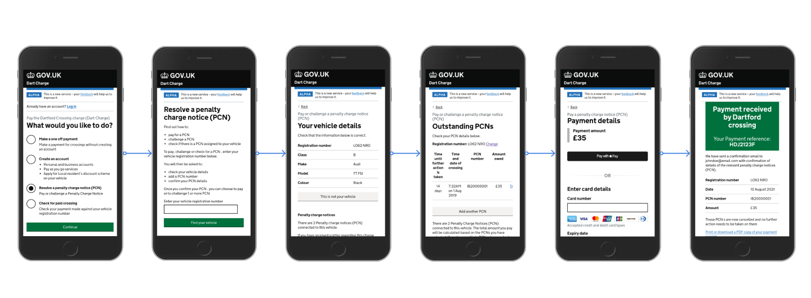

National Highways
Improving transport payment processes
Leading service design for a national platform transforming how eligibility for free school meals is checked across schools, local authorities and government systems.

Overview
The Eligibility Checking Engine is a national service used to verify whether children are entitled to free school meals and related support. The work sat at the intersection of policy, service design, operational delivery and technical change.
My role was to lead service design across the product and wider ecosystem, helping shape how the service worked for schools, local authorities, families and internal teams.
The challenge
This was not a simple interface redesign. The challenge involved policy change, multiple user groups, legacy ways of working, and questions about how the service should scale nationally while remaining clear and trustworthy.
It also required balancing the needs of different organisations with different incentives, including schools, local authorities and the Department for Education.

What I did
- Led service design across the end-to-end journey, not just the front-end interface.
- Mapped the ecosystem across schools, local authorities, DfE and connected systems.
- Shaped prototypes to test new service patterns and policy-driven outcomes.
- Worked with policy, product, delivery and technical teams to align service direction.
- Helped define clearer user journeys and service states for future scaling.


Outcomes and impact
The work helped create a clearer service direction for national eligibility checking, with stronger understanding of the end-to-end experience, the service model and the implications of policy change.
It also supported decision-making about future service design, how schools could interact with the service more effectively, and what would be needed for wider rollout and operational adoption.
What this shows
This project shows my ability to lead service design in complex, policy-driven environments, working across strategy, delivery and operational reality rather than focusing only on interface design.